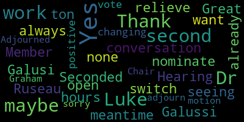
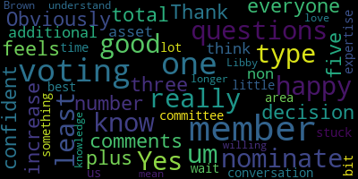

[Graham]: Motion to approve. I hear a motion to approve by Mayor Lungo-Koehn.
[Lungo-Koehn]: Seconded by Dr. Galussi.
[Graham]: And is there a motion to sever the minutes? Motion to sever the minutes. Okay, so motion to sever the minutes by Dr. Galussi, seconded by Seconded. Mayor Lungo-Koehn, I will call the roll. Jenny Graham, yes. Mayor Lungo-Koehn. Yes. Dr. Galuzzi. Yes. Dr. Cushing. Yes. John Bowen. Yes. Marta Cabral.
[SPEAKER_13]: Hold on, I have to make her a call.
[Graham]: Hold on, I cannot unmute now. OK, yes. Libby Brown. Yes. Marissa Desmond. Yes. Maria Dorsey. Yes. Brian Hilliard. Yes. Tracy Keene. Yes. Emily Lazzaro. Yes. Nicole Morell. Aaron Olapade.
[SPEAKER_07]: Yes.
[Graham]: And Luke Preissner. Absent, okay, so we had 13 present. 13 yet affirmative, zero negative, two absent, the motion to sever passes. And now we have a motion on the floor to approve the minutes from 9-18, both for the full subcommittee meeting and the communications and community engagement subcommittee by Mayor Lungo-Koehn, seconded by Dr. Galussi. So I'll call the roll again. Um, for to approve the minutes. Jenny Graham. Yes. Mayor Lungo-Koehn. Yes. Dr. Belusti. Yes. Dr. Cushing.
[Unidentified]: Yes.
[Graham]: Joan Bowen. Yes. Marta Cabral. Yes. Libby Brown. Yes. Marissa Desmond. Yes. Maria Dorsey. Yes. Brian Hilliard.
[SPEAKER_11]: Yes.
[Graham]: Tracy Keene.
[SPEAKER_11]: Yes.
[Graham]: Emily Lazzaro. Yes. Erin Olapade.
[SPEAKER_07]: Yes.
[Graham]: Luke Preissner, absent. So 14 in the affirmative. Jenny, I think you skipped me.
[Lazzaro]: Oh, sorry. I came back in. I just need my permissions back to be able to unmute myself and turn my video on because I switched devices.
[Graham]: Okay, so 14 in the affirmative, zero in the negative, one absent. Minutes are approved. We'll get the other two minutes on the next agenda and we'll take care of those then. So we have a couple of things to do this evening. The first is I wanted to provide an update on phase one of the MSBA process. So as you know, we've been in the eligibility phase. We submitted all of our deliverables back in July. And over the course of the rest of the summer and into the fall, we were working with the MSBA to look at and certify our enrollment totals. Those totals, you know, that sort of set stage for how big of a high school we're planning for and there was some back and forth between us and the folks. Um, who did their own enrollment study and then really just sort of get to know Medford and some of our plans around, um, things like housing growth and student. Um, you know, student growth and what we were seeing, so that went so we had to sort of go back and forth with them. Um, and we finished that process in, um. you know sometimes we finished our end of that process in August. The MSBA had work to do on their end. So they did they did their work and then they notified us in December that they forwarded us an agreement to sign around the enrollment. So just by way of some information we have about 1,200 students right now and that's been pretty consistent for high school for the high school side. We requested an enrollment of 1,500 for high school, and we settled on 1,395, which is almost 200 students more than our current 1,200. So that was a lot of growth and progress for us, which I think sets us up well for the you know, the, the future and the kinds of things that we're expecting to see here in Medford, both with, um, attracting students who may be selecting other high schools, um, in part, because they go to the building and they see it and they have questions about whether that's the place they want to be, um, as well as, um, providing for, um, expanded, um, families moving into Medford, um, who will want to use the, who will want to use the, um, uh, the high school as a place to send their children. So we have some room to grow, which is great and amazing. Um, and, um, we signed that we signed those agreements. Um, we have signed, um, um, Dr. Cushing, maybe we could disable the chat as well.
[SPEAKER_06]: Yep. I will now as well.
[Graham]: Um, thank you. And, We are done with the MSBA Module 1 work. On Wednesday, the board of the MSBA will hear a recommendation from their staff to move us on to what they call Phase 2 or Module 2, which is where we get to start doing the fun things like bringing on the professionals that will help us through this process. And we're really excited about that. So, um, that meeting will happen, um, Wednesday morning, and then, um, there will be meetings to onboard us to MSBA's expectations of the process. Um. Shortly thereafter, um, our delegation has sent the MSBA a letter of support on our behalf. So that was signed by, um, Senator Jalen, representatives Donato, Barbara, and, um. Garbalee, so the MSBA is in receipt of that letter of recommendation and we're just really excited to be able to do this next thing. We're so excited, in fact, that we have already started doing the next thing. So one of the meetings that we had earlier this month was of the OPM selection committee who tackled building the request for services, which is the very first document in the next phase of the process. We will review that tonight with a goal to make any amendments that this committee sees fit and get ready to send that to the MSBA tomorrow. And we're going to send that to them tomorrow so that we can be in the queue for their review, which takes about two weeks, and then we can move forward on an aggressive timeline. which will, um, have us, um, interviewing and bringing in, um, uh, an owner's project manager here before the end of June. So, um, it's a, it's a quick time. It's a quick tight timeline. I wish it could be even faster than that because getting the team on board is incredibly important. And that's, you know, that's when the real work can begin. So, um, the educators have sort of done their work, um, so far with setting the stage around what kind of, educational opportunities we're trying to provide. And now we get to the sort of meaty questions that everyone in the community has, which is really exciting. So that's a quick update on phase one. Are there any questions? Okay. If you think of anything, just, um, let me know and we will, um, we will move on from there. So in phase two, our next agenda item is, um, is, uh, our plans for phase two. Um, I covered some of that already, but the, the goal is for us to be, um, moving quickly through this process so that we can onboard the team and really get, um, to the meat of the feasibility study. Um, Oh, Emily, did you have a question?
[Lazzaro]: Sorry, yes. I just wanted to ask really quickly if you could tell me about the estimated number for how, so I was reading through and the estimates for how many students would be housed in the building, what the timeline is for that, like how, what the stretch of time was that was anticipated for the building to be used.
[Graham]: Yeah, they that's a great question. So they, they did a study that looked out. I want to say it was about 15 years. And 1 of the things that we went back and forth with them about was exactly that that range. So. Our enrollment projections within MPS show that. mostly in agreement in the first 10 to 15 years of the building's life or from now but that you know as we looked out past 15 years that's where we saw the growth that was more significant so that was part of the conversation that we had particularly around some of the housing developments that are coming down the pike and Not just like the planned projects and the permitted projects, which they ask about explicitly, but also some of the bigger. Ideas and places where we are anticipating there could be substantial transformative projects in the city, like the air rights over Wellington. So those are the kinds of things that we had to go through with them to. sort of describe and look at. And so we shared our projections with them and our projections sort of carry us much further into time than that original 15 year span. So we did make some significant progress there. So I do believe that based on everything that we were able to use as the basis, we will not be out of space the minute we start or even, you know, in the first couple of decades. which is great news. Any other questions about that? Okay, so in phase two, there's a couple of things. So I've been doing a lot of reading and the OPM selection committee has been doing a lot of reading as well about what phase two entails. And it entails, you know, bringing on the owner's project manager. MSBA has a very prescriptive process for that. So I've been reading about that process. The very first step is that we have to draft an RFS. We'll look at that in just a few minutes. And then they will have to review that it takes them a couple of weeks to review it and then they'll give us the green light to go ahead and post it. It has to be posted. We have to do a site visit. We will get responses back and. And then, you know, bring the list down to a short list, interview candidates, and make a selection. Once we make a selection, we negotiate the price. At that point, that's not part of the RFS process. It happens afterwards, which was a surprise to me. That's most of the RFPs that I work on in my world. They're sort of two things happen at the same time. But this process is a little bit different. And once we have made our selection and we have done those negotiations, we then have to bring our selected OPM to a review panel with MSBA and they have to give us the green light for that selection. So there is a, those review panel meetings happen on a monthly basis and we are targeting the June meeting to be all buttoned up and ready to go to get their approval so we can move forward. Once the OPM is on board, then we work to bring on the designer, which is the architect, so that we can get ready to start the feasibility study. So that's sort of the trajectory of this next phase is OPM, designer, and then we actually get to the fun stuff. but I'm looking forward to having the OPM on board because they will help manage some of the things that we are doing here as a committee, some of the outreach and that kind of thing. So, um, we will, we will look forward to that. Any questions about phase two process? Okay. Um, I am going to share my screen if I am allowed to do that Dr. Cushing.
[Unidentified]: You're good to go.
[Graham]: Thank you. And I am going to bring up this RFS template. I think a couple of things to know about this template is you must use this template. This is part of the process and the requirement from MSBA. And they've done a pretty nice job of being able to describe what it is that they're asking for communities to provide input to. a little bit hard to look at this document because it is in track change mode. So if that makes you a little bit crazy, I apologize. That is also a requirement of MSBA so that they can quickly and easily find the changes that we've made. Here is our RFS, there's a whole bunch of lead-in information here, and then we get to the actual meet. So, as you can see, everything that is in bold and in italics, that's where they're asking us to provide input, and everything that's struck out and filled in with comments and track changes that were the result of the work that the OPM Selection Subcommittee did. So this introduction is obviously very boilerplate. We're saying, this is Medford. This is Medford high school, that kind of thing. So those changes have been made. And then there is the other thing that we are asked to talk about here in this introduction. Oops, sorry. Um, are sort of what we think the total cost of the project. Could be, and this is an estimate, and it's, I think, an effort to give an understanding of. How big do we think the scope of this could be and so the. OPM selection committee identified 200 million to 600 million as a very wide range. It's a wide range because there's a lot of unknown right now. It's also a very wide range because any number of solutions could be viable for us and we don't know yet which of those solutions from building something completely new to substantially renovating what we have. We don't yet know how that will shake out. And that's what the feasibility study is for. So this is what we came up with. And to me, it's just a signal for those folks who are watching that we understand that there could be any number of solutions here. And we are wanting and interested in exploring them all. The background is the next section and I will leave this up just for you to read it and I will happily read it out loud to provide a little bit of information about the background of this project. The city of Medford located in the greater Boston area is a dynamic and growing community that places strong emphasis on educational excellence. The district is committed to providing an inclusive and innovative learning environment with a focus on preparing students for success in a rapidly changing world. The Medford High School, established in the mid-20th century, has served as a cornerstone of the city community's financial infrastructure. However, over time, the building has become increasingly outdated and no longer meets the evolving needs of students, educators, or the broader community. The facility's aging systems, limited space, and lack of modern learning environments have prompted the city to pursue significant renovations and improvements to the high school campus. The Medford Comprehensive School Building Committee is comprised of a diverse group of stakeholders, including elected officials, city officials, school district representatives, and community members with a variety of backgrounds. The committee's primary mission is to oversee the planning and execution of the Medford High School project, ensuring that it meets academic, social, and safety needs of students. The committee has brought support to also pursue expansion of its portfolio of Chapter 74 programs, its early childhood programs, and to co-locate the current Curtis-Tufts program to increase access to student activities for students at the Curtis-Tufts. The district's grade configuration includes elementary schools K-5, middle schools 6-8, and the high school 9-12. The existing high school facility now serves approximately 1,200 students and is expected to see future growth. The Medford High School campus also houses athletic facilities, fine and performing arts spaces and administrative offices that serve the school community and the community at large. The district is also pursuing consolidation of our early childhood programming into a single location to alleviate space concerns that are for elementary schools. As part of an ongoing effort to upgrade the district's infrastructure, the member of public schools submitted a statement of interest to the highlighting the need for a comprehensive solution to address the building shortcomings. The accepted serves as a reference for the current project and outlines the key areas of concern, such as structural integrity. accessibility, energy efficiency, and technology integration. The project aim is to not only enhance the learning environment for students, but also to ensure that the school can serve the community for generations to come. This request for services seeks to engage a qualified owners project manager who can contribute to the success of this transformative project, providing expertise in design, construction, and project management. The goal is to create a state-of-the-art educational facility that fosters creativity, collaboration, and academic excellence, and do the project with substantial community input from the community at large and specifically from the students and staff who will work, learn, and thrive in the new building. Questions or comments about anything that you've seen so far?
[Brown]: Sounds good.
[Graham]: Okay, we'll move on the project description objectives and scope of service have some sort of small things. that we had to fill in, and then we were asked to provide some specific information regarding the identified school, including but not limited to total square footage, site information, age of the building, historical components of the building, and or site, if any, building conditions and problems, current grade structure, enrollment, and MSBA agreed upon enrollment. So in this section, we've added some information to answer that request, which says the Medford High School and Medford Vocational Technical High School complex was constructed during the late 60s and opened in the fall of 1970. From its opening in Until 2017, it housed 2 distinct schools, Medford High School and Medford Vocational Technical High School. In 2017, the Medford School Committee voted to merge the 2 schools into 1 comprehensive high school. But despite the forward-looking vision aimed at establishing 1 flagship school to serve as the epicenter of public education for the Medford community, the facility is designed for delivery of instruction in a bygone era, namely the early 70s. The challenges yielded by its antiquated design have been exacerbated with increasing severity by infrastructure that ranges from deteriorating to inoperable. MPS envisions Medford High School as a comprehensive high school with a broad array of academic programs and a host of vocational programs sanctioned under Chapter 74. The 55-year-old aging facility housing MHS is an obstacle to optimal learning conditions. Medford High School currently serves a combined 1210 students in grades 9 to 12. we also support students in project transition aged 18 to 22 over 50% of our high school students are CTE students. Additionally, the Medford. A pre-K program that includes 100 students and a daycare for children's ages two months to five years has an enrollment of 74 students. Together, the total enrollment of students at MHS is 84. So we should fix that number. I will fix that. The district's agreed upon enrollment for the projection for a new Medford High School is 1695 of this figure, 1395 are 9 to 12 high school students, 200 are pre-k students, and 100 are students in the district state care program. Questions about that section? Okay. Project objectives under consideration by the owner. So this, this section actually was a place where we had a lot of discussion in our subcommittee meeting around, like, what are the things that we want to call out? We, so we've made this list. I also, in my work to sort of tighten up a few things, did take a peek at a couple of other RFSs from other communities. So this list is very much open for, Suggestion and questions, if we, if there's anything else we want to add that helps people understand sort of what we're trying to do. So we talk about the Northeast collaborative for high performance schools and or the US Green Building Council's lead for schools rating system qualification and analysis of potential. To be a net zero energy building life cycle costs of operational of operating the school as it relates to future operational budgets. We are interested in a CM at risk delivery method. Potentially we have identified potential other sites. So there's a vetting process that our is going to need to be aware of. Um, site adjustments required to increase the number of egresses from the property if a new if a new project remains in the current place. So, as, you know, there's 1 way in and 1 way out of Medford high and that is a significant sort of. Bottleneck as we flow people in and out of the building, so we would want to be looking at that. update the serving existing condition information of buildings on the Medford High site, including any hazardous materials. So there's any number of things that could happen on the campus that they have to be aware of. Provide design alternatives for renovation, addition, renovation, and new construction options for the high school to meet the educational specification of the school building committee and the MSBA. provide a schedule, construction cost estimate, operating cost estimate, and life cycle sustainability analysis for each option. Constraints of the district, it's assumed that school will be in session on this site for the duration of the project. So phase construction and possible use of swing space may be required. And then under that bullet, I think the other things that we've talked a lot about is like we will have some extra work to do from a planning perspective. To ensure learning continuity for all students, but particularly for our vocational programs. We may need to purchase. Modular something to support this project, depending on what happens and we know that that's a thing that we might need to consider. We might need to provide and maintain a, you know, we will need to provide and maintain a secure and positive educational environment during construction and then also sort of seeking somebody that has some experience with phase construction projects. So. That is sort of the list of things that the OPM Selection Committee came up with. If there are any other thoughts or suggestions here, I'm happy to take them.
[SPEAKER_03]: Alongside LEED, there's another similar certification that's called WELL certification, W-E-L-L, that is a more kind of holistic look at the health and sustainability of the project that takes the user into account and not just the sustainability of the building. So I think that's something to consider as well.
[Graham]: W-E-L-L, Marista? Yes. Yes. OK. Perfect. I added that.
[SPEAKER_13]: I put a minor edit in the chat just to button up the CN at-risk delivery method bullet.
[Graham]: OK. Updating evaluation of CM at risk delivery method, including a final recommendation. Thank you, Philip. That's great.
[Brown]: I'll put a note in there just about the notes of life cycle slash sustainability. I just lost the exact language, but. like life cycle analysis versus life cycle costs. Now, those are two different things. I'm going to make sure we are stating the one that we want. I'm just going to put something in the chat about that. Great.
[Graham]: Thank you, Libby.
[SPEAKER_13]: Sure. The site adjustments required to increase the number of egresses from the property to the public roads or something, just something minor like that. Okay, thank you that any potential alternative alternate sites just. I'd finish that and just say, like, for construction of new high school facility. Just to tell him what the alternative sites for.
[Graham]: Okay, thank you. Any other questions there. Okay, so the next section that requires our attention is the evaluation criteria. So, in this section, we had a lot of discussion about this as well and you can see that a lot of this does come from. you know, come from MSBA's template. The text in green was added. The other thing that we talked a lot about was the point scale, and this will be used by the OPM Selection Committee to rate and evaluate all the bids that we receive. And sort of the calculus of how we put this together was to award Um, standard sort of thresholds of points for different things that range from, like. We need to have this, but it's very likely everyone's going to have this skill to, um, the, the more customized things at higher number of points. So. Um, if you look at this, what you'll see is some 10 point option, some 10 point items to me, those are things that feel very, uh, like. You know, sort of table stake key, right? Like an, who is doing this work all the time is more than likely going to have those things. The 20 point scale sort of steps up a little bit where now there is some variability and. Discretion in terms of how those things might get delivered. 30 points does talk a little bit more about. You know. their overall capacity to do these kinds of projects. And then, you know, sort of some bigger point values around key personnel who will work with us at 40 points, as well as 50 points for past performance. And I stole this from Arlington, which you can see, so I'll fix that. St. Medford. So, The selection committee felt like this sort of point allocation. Worked, but I would be very curious if there's anyone in the room who has other thoughts or suggestions about. About that, because now is the time to sort of set that methodology in place.
[SPEAKER_13]: Question you add minor points like 5 or 10 or anything like that for. Cost evaluation? No.
[Graham]: So what we have learned through this process so far is that there is no cost response that comes with bids. So this is a process where we evaluate, it's a value-based contract. And once you select somebody, Then you move into a phase where you negotiate with them and you talk about price. Having said that part of the documents that will be delivered with this are all of the public exhibits with MSPA and it's well on record that we have a certain. amount of money set aside for the feasibility study, which we had to break down to say this much is for the OPM, this much is for the designer, and this much is for incidental. So all of that will be well known to people in terms of what our scope and budget is, but my understanding is that all of that price conversation comes after you make your selection first, which is a little bit unusual, but that's how this process works.
[SPEAKER_13]: I have a question on the section just slightly above, if you don't mind. Sure. Going back up a little. Above the durations for the feasibility phase and stuff, there's a sentence that says, the work is divided into the project phases as listed in attachment A of this contract. I clicked on attachment A in the PDF. I didn't see any work, any project phases in that attachment. So, I just don't know if I missed it or.
[Graham]: There are a handful of, yeah, you, you didn't miss it. It's not there. There are a handful of other attachments that need to come together with this that are provided by MSBA that are not here right now, but they, we will have to provide those as well. Any other questions about the evaluation points and methodology? I know it's a lot of, like, meat to take in. The next section does talk about a shortlist, and Philip, to your question about cost, this is where I thought that the cost conversation would happen is once you get to the shortlist and you're evaluating the proposals, and even then, that's not what happens in this process. So basically, once we get down to the short list of candidates and we invite them in for finalist interviews, the scale there is the quality of the reference checks for 30 points and 70 points for the quality of the finalist presentation. And then you have to make a selection before you get into that cost discussion. So that has been edited and updated based on some of the work the team Has done since our meeting to get clarification on that. Much of this is. Boilerplate and the next the next component of the of what is here is the list of who who is on the committee. So we have to name those folks and talk a little bit about some of the details of what we plan to do. In terms of how the shortlist will be done, so we're planning for 2 hour interviews and then how how we will actually negotiate. The, the price, and so I actually did steal from Arlington from Arlington's in terms of how we will do this, but essentially the chair of the. Uh, review committee, the CFO of NPS, the superintendent and the budget director work together to negotiate a fee, um, with the 1st ranked, um, respondent. So. Um, all the rest of this came from Arlington, um, their RFS went through the same process. So I, um, I felt good about sort of pulling all of that in. Um, and, um. Then the next thing that is outlined here is a timeline. So this timeline does assume that it will take the MSBA two weeks from Wednesday, essentially, to do their review. And it takes us about a week to get things posted. uh, from a procurement perspective. So I've given us a week of buffer, um, and then, uh, have sort of cascaded from there through, um, the series of activities and tried to plan. Um, you'll see, there's like sort of a gap right in here. And, um, that gap is, um, certainly, um, due to April vacation, um, knowing that that is a really hard time for people. So. I felt okay about that, especially because the OPM review panel meeting that we would be eligible to attend is not until 6-2, so we had plenty of time to navigate that April vacation timeframe. Questions about the timeline? Okay, just about everything else is sort of filling in the name of our procurement officer. And, oh, sorry, Phil, did you have a question?
[Unidentified]: That was Paul. Can you go back up a little bit?
[Graham]: Sure.
[SPEAKER_13]: The part with Fiona, you had some, I just noticed that after her name is actually, yeah.
[Graham]: Thank you.
[Maxwell]: And Jenny I just had some, um, I can take offline but just some logistics as far as, um, you know, how will advertise it and how responses and that sort of stuff. No need to boggle down the whole group but we can chat about that.
[Graham]: There was a question as well about certifications. So there was a in here it's asked if we asked us to say what certifications we require. And I did a little bit of sleuthing and did talk to our legal counsel as well. And this is very similar to what Arlington articulated. So I don't think there's anything Um, particularly specific here that we need to require, um, instead to ask them what their certifications are. Um, so I would actually, if anybody who is more in this world than I am has any suggestions, if there's anything specific there, I'm happy to take those suggestions. Okay. Let's see. I think that is just about everything that was changed. Oh, Paul?
[SPEAKER_07]: Scroll back up. Another one with Diona right there.
[Graham]: It's very hard to, I love track changes, but at some point it gets to be like too much. So we'll clean up the formatting and everything once the MSBA weighs in. And, you know, we will provide people our statement of interest. We will provide them our educational profile and our Chapter 74 forms. All of those things will go with the package in addition to the forms that and contracts that MSBA requires. So all of that will go with this package when it goes out the door. And that's it. Are there any other questions about this document? Okay. So my goal would be for us to take a vote to approve this as amended so that it can go to the MSBA tomorrow and be in queue for them. one day before they move us into the next phase so that we're in line and ready to go. Is there a motion to do so? Emily?
[Lazzaro]: So moved, motion to approve.
[Graham]: OK, motion to approve by Emily, seconded by?
[SPEAKER_07]: Second.
[Graham]: Erin? I'm going to stop the share so I can find my list. Uh, let's see here. Okay. Um, Mayor Lundo Kern. Yes. Dr. Glusi. Yes. Dr. Cushing.
[SPEAKER_07]: Yes.
[Graham]: Joan Bowen.
[SPEAKER_07]: Yes.
[Graham]: Marta Cabral. Yes. Libby Brown. Yes. Marissa Desmond. Yes. Maria Dorsey. Yes. Brian Hilliard.
[SPEAKER_11]: Yes.
[Graham]: Tracy Keene.
[SPEAKER_11]: Yes.
[Graham]: Emily Lazzaro.
[Lazzaro]: Yes.
[Graham]: Nicole Morell. Yes. Aaron Lopate. Aaron.
[Unidentified]: Yes.
[Graham]: Luke Prisner absent, uh, Jenny Graham. Yes, so 14 in the affirmative, 1, 0 in the negative, 1 absent, uh, motion passes. So I will. get this in the queue so that we can move, which is so exciting. The last thing on our list, as we were working through, as the OPM Selection Subcommittee was working through the creation of this document, we did have some discussion around the size of that committee. So right now, there are three voting members on the committee. It's myself, Dr. Cushing, and Aaron. We have 2 non-voting members on the committee, Fiona Maxwell, who's our Chief Procurement Officer, and John McLaughlin, who was not able to be here tonight. But we did talk a bit about whether it made sense for there to be 1 or 2 additional folks on this committee. probably two so that we can keep an odd number just so that the group that is sort of vetting all of this gets just a little bit bigger than it is right now. Um, and I think the vision is that this group would be the group that sort of sits through all of the reviews, um, and, um, certainly, um, does all of the evaluation to bring a recommendation back to this committee before it's all said and done. But, um. That's I think it will be a significant amount of work and I am particularly interested in making sure that, um, some of the folks that we put on this committee to, um, Advise in this process might be good. you know, might be good additions to this group. So, um, the, the recommendation from, um, the subcommittee was that we add two voting members and maybe one non-voting member to the, to the group, um, to make sure that we have enough eyes on this really important decision. Um, so I bring that back to this group because this group voted on that committee initially. So we also would, um, need to vote to, make a change. So I will open that up if there's any questions or comments.
[SPEAKER_03]: I would assume that this committee obviously is going to sit in on all of the interviews. The interviews, will they be like during the business day?
[Graham]: I think that will depend on the committee. So I think whoever is on the committee, what we will have to do between now and the time this is published is make sure that there is availability and we can block those times. But I think there is some flexibility on that timeline. And I'm sure it's not uncommon for these kinds of things to happen, not inside the working day. So, I think we have some flexibility there. I just, you know, the timeline will will be. Fast and pretty tight, even if we are doing it after hours. All right.
[Olapade]: Thank you. I don't have any questions or comments. Obviously, I'm one of the voting members for that. I'm happy to, if everyone else feels confident about this decision, to increase the total number from at least from three to five, plus that additional non-voting member. I'm happy to nominate at least one member who I think would be a really good asset. I know that when we had a conversation about who would be best for this committee, I know that their expertise in this area was something that stuck out for a lot of us. So is this a time to do that or should I wait a little bit longer?
[SPEAKER_14]: Go for it.
[Olapade]: So if they are willing, I'd love to nominate Libby Brown, um, to be one of the voting members. Um, I mean, I, as I understand it, she has a really good knowledge on this type of these types of questions.
[Graham]: So, so there's a motion to add Libby Brown to the committee. Second seconded by Marissa there. Any questions or comments about that motion from the rest of the group?
[SPEAKER_06]: Just before we take a roll call vote, make sure Libby has the time and is interested.
[Brown]: I wasn't sure if I should speak up. But yes, I'm happy to be involved. And I've worked with many OPMs over the years. So I have a good sense of what we're looking for here.
[Lungo-Koehn]: Great. Thank you.
[Graham]: Well, then I will call the roll. Mayor Lungo-Koehn. Yes. Dr. Galusi. Yes. Dr. Cushing.
[SPEAKER_07]: Yes.
[Graham]: Joan Boland. Yes. Marta Cabral. Yes. Libby Brown. Yes. Marissa Desmond.
[Unidentified]: Yes.
[Graham]: Maria Dorsey. Yes. Brian Hilliard.
[SPEAKER_11]: Yes.
[Graham]: Tracy Keene. yes emily lazaro yes nicole morrell yes arnold potting yes luke prisner absent jenny graham yes 14 in the affirmative zero in the negative one absent welcome libby um thank you so um i do think um we are still thinking about one additional voting member and one non-voting member to add to this group? Are there people who are really excited to put their hand in the air and participate in this process? Or I see a hand from member Rousseau, who is a non-voting member, so he would be filling the non-voting spot. Are there other folks who are excited about this choice, about this opportunity?
[Lungo-Koehn]: Hearing and seeing none, we'll nominate Member Ruseau.
[Graham]: Okay, nomination for Member Ruseau by Mayor Lungo-Koehn. Is there a second?
[SPEAKER_03]: Second.
[Graham]: Second by Dr. Cushing. Okay, roll call. Mayor Lungo-Koehn. Yes. Dr. Galusi. Yes. Dr. Cushing.
[Lungo-Koehn]: Yes.
[Lungo-Koehn]: Yes.
[Graham]: Luke Prisner absent. Jenny Graham, yes. So 14 in the affirmative, 0 in the negative, 1 absent. Welcome, Paul, to the team. And so I think there's maybe one more voting member to appoint. And I did have a brief conversation with Dr. Galussi about whether she wanted to be that person. And I think we would love to have her, but she has a very full plate right now. So I'm totally open to hearing from you, Dr. Galussi, if you have a preference.
[Galusi]: No, I mean, I'm happy to step up. I just also wanted to kind of see if there were other people that also wanted the opportunity to participate. But I'm absolutely happy to step up and be a participating member of this committee.
[Graham]: Are there other folks who might want to give Dr. Galusi some free time and join us instead?
[SPEAKER_14]: Jenny, if I read Luke Preissner's email correctly this morning, he expressed interest in being part of a group that was making these decisions. So I don't know if he's a voting member or not, but that's the way that I read it, that he was offering his services.
[Graham]: I did have a couple of email exchanges with Luke. And what he was referring to was sort of the creation of the document and willingness to help support that. So I didn't read it that way. And I know he was unable to come. So I would hate to put him on the spot like that. And he did see the agenda. So if he had an inkling of that, I'm sure that he would have let me know. And I do expect that he will be very active on the communications and community engagement subcommittee. So. I didn't know we have a couple of other architects in our midst. Is that true? I want to put you on the spot, Brian.
[SPEAKER_12]: Yeah, I'm one of the guiltiest charged. It could be of interest. I think I need to dig in a little bit more. I mean, typically when I was involved, I was on the design end. So, you know, typically just more of the tail end, not opposed to joining you guys. But I think I just needed to dig in and see if I'm the right kind of person that you're looking for. So how about a maybe? Okay.
[Graham]: Well, I think to your point, this is the first procurement. This is the OPM selection committee. There will be another whole procurement to bring on the designer. And so maybe we ask Dr. Galusi to be part of this process, and we plan to shift that selection committee to give people a break and pull you in at that time when we are onboarding that designer.
[SPEAKER_12]: Does that feel better? Absolutely. Sure. And, and again, you know, I'm happy to stretch if need be, and obviously would love to give anybody relief if they need it. But, you know, I know sort of my, my skill set. So if there's, uh, if there's somebody better than me right now to fill in, but I'm happy to, to, um, switch horses in the middle of the race too. So.
[SPEAKER_03]: Okay, great. Yeah. Along the same lines as, um, Brian, I'd be happy to. to be in on the architect selection. I'm more familiar with the questions and things that would be asked then, as opposed to asking the OPM. OK, great.
[Graham]: Well, we'll hire you in just a few weeks, hopefully, for that process. So is there an official nomination to add Dr. Galusi to the OPM selection committee?
[SPEAKER_03]: I'd be happy to nominate her.
[Graham]: OK, so nominated by Dr. Cushing.
[Lungo-Koehn]: I'll second that, and also maybe, Dr. Galusi, if you want to have a conversation with Luke in the meantime, and maybe we could always switch it if it would relieve you from hours of work that you already have a ton of. So I second it, and I'm open to changing that vote if you get a positive from Luke.
[Graham]: Great. OK, so to appoint Dr. Galusi, Mayor Lungo-Koehn. Yes. Dr. Galusi. Yes. Dr. Cushing.
[Unidentified]: Yes.
[Graham]: Joan Bowen. Yes. Marta Cabral. Yes. Libby Brown. Yes. Maria Dorsey. Yes. Brian Hilliard.
[SPEAKER_11]: Yes.
[Graham]: Tracy Keene.
[SPEAKER_11]: Yes.
[Graham]: Emily Lazzaro. Yes. Nicole Morell. Yes. Erin Olapodig.
[SPEAKER_07]: Yes.
[Graham]: Luke Prisner, absent. Jenny Graham, yes. 14 in the affirmative, 0 in the negative, 1 absent. Motion passes. So welcome all to the committee. I will reach out to you about availability so we can put some calendar blocks on in the coming days so we can get ready for this next set of steps. Are there any other questions before there is the motion to adjourn? We'll send you a note and let you know the outcome of the board meeting on Wednesday. And we will also prepare a press release from the committee to the community with hopefully good news. Is there a motion to approve?
[Lungo-Koehn]: Adjourned, sorry. Thank you for all the work, Chair Graham. A motion to adjourn.
[Graham]: By Mayor Lungo-Koehn, seconded by Dr. Galusi. Um, okay. One more roll call. Mayor Lungo-Koehn. Yes. Dr. Galusti. Yes. Dr. Cushing.
[Lungo-Koehn]: Yes.
[Graham]: Joan Bowen.
[Lungo-Koehn]: Yes.
[Graham]: Marta Cabral. Yes. Libby Brown. Yes. Marissa Desmond. Yes. Maria Dorsey. Yes. Brian Hilliard.
[SPEAKER_11]: Yes.
[Graham]: Tracy Keene.
[SPEAKER_11]: Yes.
[Graham]: Emily Lazzaro. Yes. Nicole Morell. Yes. Yes. Yes. Yes. Yes. Yes.
[Unidentified]: Yes. Yes. Yes. Yes. Yes. Yes.
[Graham]: Yes. Yes. Yes. Yes. Yes. Yes. Yes. Yes. Yes. Yes. Yes. Yes. Yes. Yes. Yes. Yes. Yes. Yes. Yes. Yes. Yes. Yes. Yes. Yes. Yes. Yes. Yes. Yes. Yes. Yes. Yes. Yes. Yes. Yes. Yes. Yes. Yes. Yes. Yes. Yes. Yes. Yes. Yes. Yes. Yes. Yes. Yes. Yes. Yes. Yes. Yes. Yes. Yes. Yes. Yes. Yes. Yes. Yes. Yes. Yes. Yes. Yes. Yes. Yes. Yes. Yes. Yes. Yes. Yes. Yes. Yes. Yes. Yes. Yes. Yes. Yes. Yes. Yes. Yes. Yes. Yes. Yes. Yes. Yes. Yes. Yes.
[Unidentified]: Yes.
[Graham]: Yes. Yes. Yes. Yes. Yes. Yes.
[Olapade]: Yes.
[Olapade]: Yes.
|
total time: 47.35 minutes total words: 6289 |
total time: 0.63 minutes total words: 94  |
total time: 0.54 minutes total words: 94 |
total time: 0.67 minutes total words: 156  |
|
total time: 0.3 minutes total words: 43 |
|||
{kind=link}
{kind=link}
{kind=link}
{kind=link}
{kind=link}